11. 닫힌루프 전달함수
닫힌루프 제어계의 구조를 살펴보자.
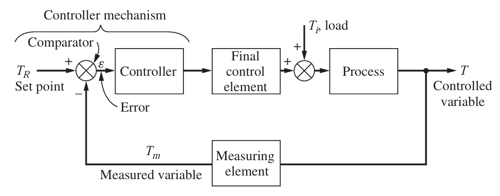
설정점 TR이 설정되면, 이것이 측정변수 Tm과 비교기에서 비교되어 오차를 형성한 후 제어기에 입력된다. 제어기는 이 오차에 비례한 신호를 최종제어요소에 주고, 최종제어요소는 적절한 피드백 신호를 공정에 준다. 이는 외란과 합쳐져 공정에 변화를 주어 T의 변화를 이끌어낸다.
이에 대한 각각의 전달함수가 존재함을 저번 포스팅에서 보았을 것이다. 따라서 공정을 다음과 같은 기호로 표현할 것이다.
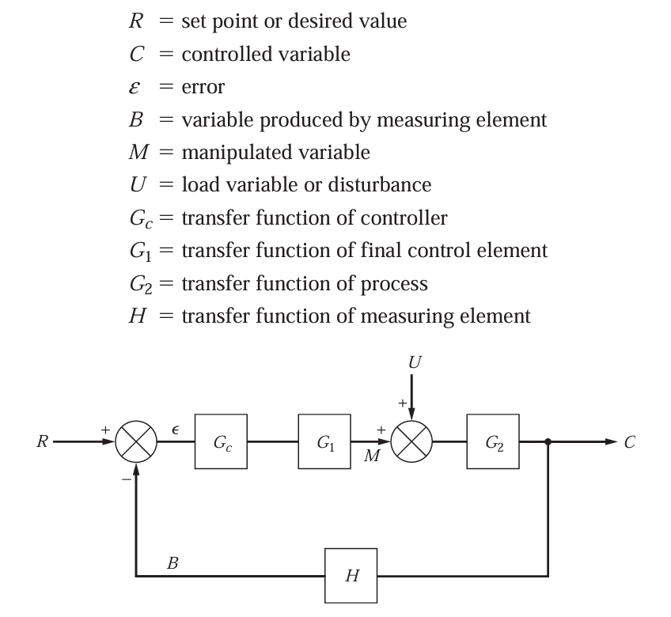
이때 경우에 따라 Gc와 G1블록은 하나로 합쳐질 수도 있다. 이때 왼쪽에서 오른쪽으로 가는 위 루트를 진행경로라고 하고, 중간에 돌아가는 H블록은 피드백경로라고 부른다. 통상적으로 진행경로 내의 전달함수를 G로, 피드백 경로의 전달함수를 H로 부른다. 이때 한 루프안의 모든 전달함수의 곱(여기선 GCG1G2H)를 열린루프 전달함수라고 한다. 이 포스팅에서는 닫힌루프 전달함수를 다룰 것이므로 아직은 중요하지 않다.
더욱 복잡한 계에서는 다중루프가 존재하기도 한다. 여기서는 단일루프를 먼저 살펴볼 것이다.
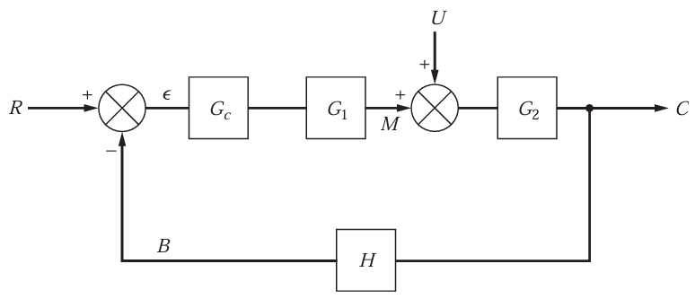
그림을 다시보자. 어떤 공정을 블록선도로 표시했다면, 다음단계는 전달함수 C와 R 또는 C와 U의 관계를 구하는 것이다. 당연히 목표치를 설정했을때 결과C가 어떻게 나오는지, 또는 유입 U에 따라 C가 어떻게 변하는 지를 알아내야 하기 때문이다. 이렇게 경로상의 모든 전달함수를 합친 것을 총괄전달함수라고 부른다.
여기서는 설정점 변화에 대한 총괄전달함수와 부하 변화에 따른 총괄전달함수를 구해보도록 하겠다.
1) 설정점 변화에 대한 총괄전달함수
이 경우 U=0이라고 가정한다. 그러면 함수를 다음처럼 단순화시킬 수 있다.
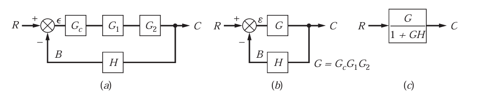
진행경로상의 모든 전달함수를 곱하고, 루프가 존재할 경우 1+GH로 나눠주는 것이다. 이는 규칙이기 때문에 암기해두는 것이 좋다. 증명은 위 그림 b에서 다음과 같이 가능하다.
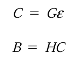 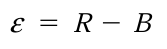 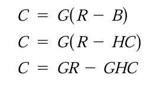 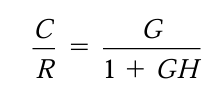
자세한 요령은 다음과 같다.
1)결과값에 도달하는 경로와 그 사이에 있는 루프를 찾는다.
2)경로를 모두 더하고, 1+루프합으로 나눈다
다음 예시로 알아보자.
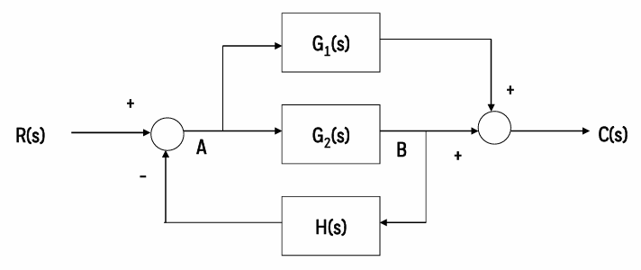
1)결과값에 도달하는 경로와 그 사이에 있는 루프를 찾는다.
일단 R(S)에서 C(S)로 가는 경로는 2개가 존재한다.
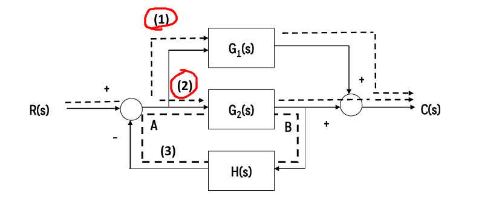
사이에 루프는 H(S)를 거치는 하나가 존재한다. 이 루프안에 있는 전달함수를 모두 곱한다.
2)경로를 모두 더하고, 1+루프들의 합으로 나눈다
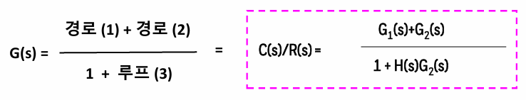
이렇게 구할 수 있다.
2)부하변화에 대한 총괄전달함수
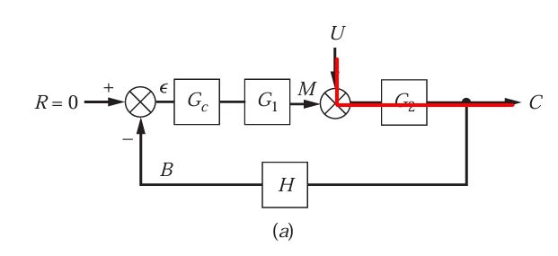
일단 경로는 G2밖에 존재하지 않는다. 그리고 중간에 루프의 전달함수를 모두 곱해서 나눠주면
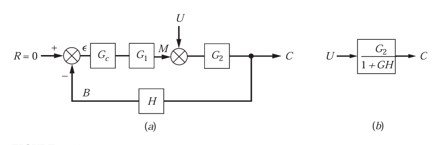
이렇게 표현해줄 수 있다.
이 규칙을 연습하기 위해 다음 예제를 풀어보자.
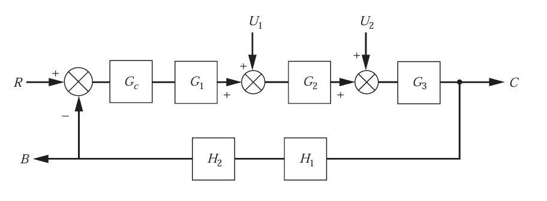
여기서 전달함수 C/R, C/U1, B/U2를 구해보자.
먼저 C/R의 경우
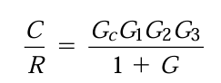
여기서 G=GCG1G2G3H1H2이다.
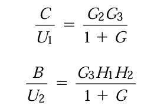
이러한 규칙은 어거지로 암기하는 것 같지만, 그 원리는 연립방정식의 해를 구하는 것과 같다.
이제 R과 U1의 독립적인 변화에 대하여 C의 응답은 다음과 같이 나옴을 위에서 첫 두 식으로 알 수 있었다.
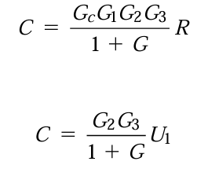
이때, 만약 R과 U1의 변화가 동시에 발생하는 경우엔, 전체응답은 각각의 응답의 단순 합과 같다. 이를 중첩원리라고 부른다. 따라서
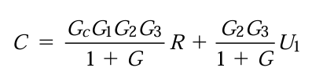
즉 하나의 입력변수에 대한 결과값의 비를 규칙으로 얻을 수 있는데, 결과값이 여러 입력변수의 함수이면 단일 입력변수의 결과값의 합으로 구할 수 있다.
이제 어려운 다중루프계에서도, 규칙을 통해 총괄전달함수를 구하는 것을 살펴보자.
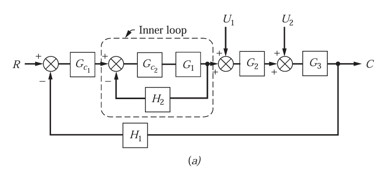
여기서 U1, U2말고 R과 C 사이 전달함수를 구할 것이다. 이 경우 내부 루프를 먼저 단순화시킨다.
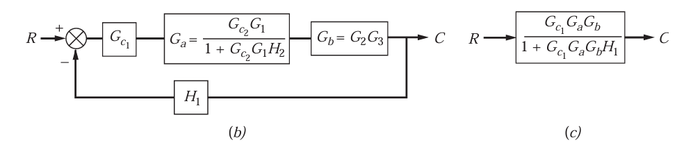
그리고 C/U1, C/U2도 구해서 C에 대해 정리 후 다 더하면 C의 수식을 얻을 수 있을 것이다.
닫힌루프 전달함수의 분모는 어떤 변수쌍이 선택되던지 항상 1+G라는 동일한 항이 포함된다는 사실을 유의하라. 여기서 G는 단일루프 제어계의 열린루프 전달함수이다.